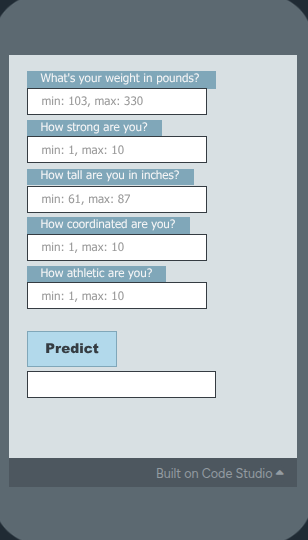

What This Project Was
Vasili, Michael, and I built a recommender for people to figure out which sport to play. We did this because we felt that people who are new to play sports may find it difficult to figure out which sport to play.
Screenshot or Visual

Project Link
The Problem or Question
The problem we were trying to solve was the problem that many people didn't know which sport to play.
The Data, Features, or Labels Involved
We used data from high school students, which may lead to the model being inaccurate because the survey answers were from a younger audience. We used features like, weight, strength, height, coordination, and athleticism.
What the AI System Was Supposed to Do
The model was trying to predict which sport a new athlete should play.
One Limitation, Bias Risk, or Ethical Concern
One concern with this project is that it won't be accurate for people who don't want to play sports, because almost all of our responses were from people who play sports. This could affect users in the following way: by not working for people who don't want to play sports or won't be good at sports.
One Way a Human Decision Mattered
One human decision that mattered was that we had to decide which information was accurate, and which of the information was messed up from the surveyor.
One Way This Project Could Be Improved
I believe a better testing approach would be the best improvement because it would lead to more accurate data. I think this would be the best improvement because many people answered they play e-sports, even though we only sent the survey to one person who played e-sports, which messed up our data a little.